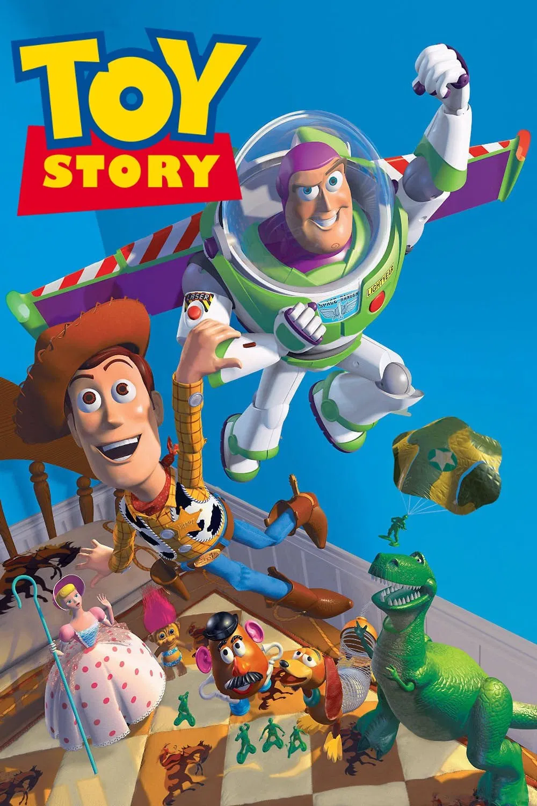
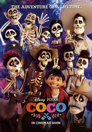
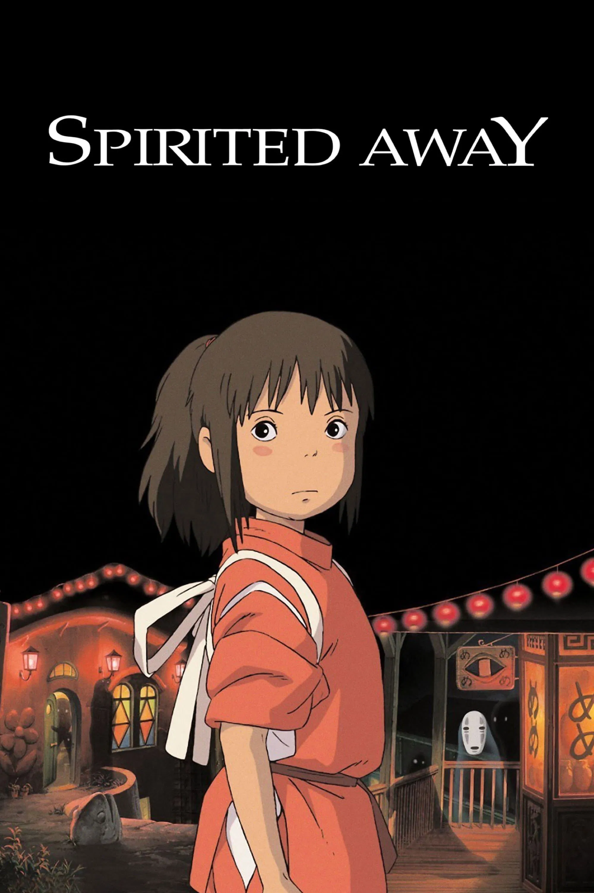
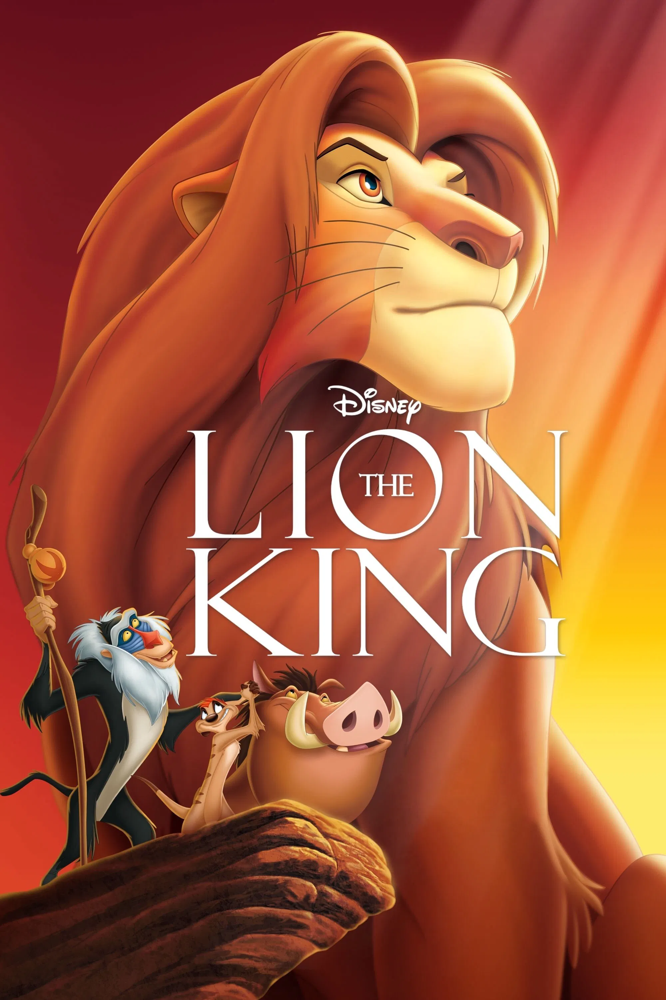
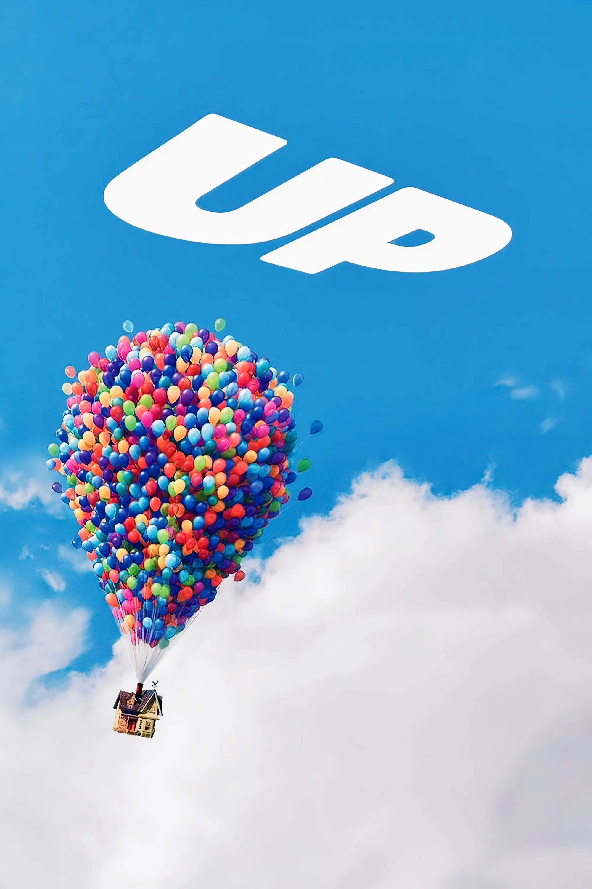

¿Sabías que…?
la película Titanic (1997) costó más dinero que la construcción real del barco Titanic? El presupuesto
del filme fue de unos 200 millones de dólares, mientras que el barco original costó alrededor de 7,5
millones en 1912 (unos 150 millones actuales).

VIDEO
curiosidades🎬
Fue la primera película animada completamente por computadora en la historia del cine.
Tom Hanks grabó la voz de Woody durante los descansos de otras películas para mantener
la energía del personaje.
Buzz Lightyear originalmente se iba a llamar “Lunar Larry”, pero el nombre cambió para
sonar más heroico.
Cada fotograma tardaba entre 4 y 13 horas en renderizarse, dependiendo de la complejidad
de la escena.
Clásico de Pixar sobre juguetes que cobran vida.

VIDEO
curiosidades🎬
Pixar viajó a México varias veces para inspirarse en la cultura, la arquitectura y las
tradiciones del Día de Muertos.
La canción “Recuérdame” (Remember Me) ganó el Óscar a Mejor Canción Original en 2018.
Cada pétalo de cempasúchil en la película fue animado individualmente, ¡hay miles en
algunas escenas!
Gael García Bernal, Benjamin Bratt y Anthony González (Miguel) cantaron sus propias
canciones en la versión original.
Celebración de la familia y la memoria.

VIDEO
curiosidades🎬
Hayao Miyazaki creó la historia para la hija de un amigo, porque quería una película que
hablara a las niñas de 10 años sobre crecer y tener valentía.
El nombre “Chihiro” significa “mil búsquedas” y “Sen” (como la llaman en el baño)
significa “mil”, simbolizando su pérdida de identidad.
Cada fotograma fue dibujado a mano, ¡más de 140,000 en total! No se usó animación por
computadora.
Fue la primera película de anime en ganar el Óscar a Mejor Película de Animación en
2003.
La imaginación de Studio Ghibli en su máximo esplendor.

VIDEO
curiosidades🎬
La famosa escena del amanecer inicial tardó casi dos años en completarse y fue la
primera animación digital en una película de Disney tradicional.
Timon y Pumba fueron los primeros personajes de Disney en mostrar abiertamente
flatulencias… algo inusual para la época.
El rugido de Simba adulto es en realidad una mezcla de rugidos de león, tigre y ¡un
aspirador!
Ganó 2 Premios Óscar: Mejor Canción (Can You Feel the Love Tonight) y Mejor Banda Sonora
(Hans Zimmer).
Una historia emotiva y musical.

VIDEO
curiosidades🎬
Carl Fredricksen iba a ser un personaje más joven originalmente, pero los creadores
decidieron que fuera anciano para resaltar su historia de amor y pérdida.
Dug, el perro que habla, tiene voz de verdad: se usaron varias pistas de perros reales
mezcladas para crear su voz única.
La casa flotante necesitaba más de 20,000 globos digitales para levantarla, y cada uno
estaba animado individualmente.
Ganó 2 Premios Óscar: Mejor Película de Animación y Mejor Banda Sonora (Michael
Giacchino).
Aventura y ternura en una sola película.
Subir